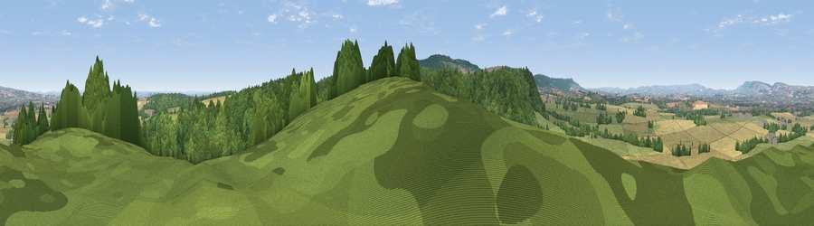

Viewpoint near Corfe
#12665 in England · top 29% of its area beats it · near CorfeWhere it is
The exact computed spot (ST 24925 20275). Click the marker for map links.
The view, rendered

A 360° render of this exact spot computed from the terrain model, tree cover and land cover — summer colours, afternoon light, calibrated against photographs of famous viewpoints. Real trees, hedges and buildings will differ in detail.
The panorama
Grey silhouette: terrain skyline in each direction (720 bearings, Earth curvature and refraction included). Dashed green: skyline with trees (+15 m) and buildings (+8 m) as obstacles. Blue strip: how far the ground is visible on each bearing.
Where the view opens
Wedge length = distance to the farthest visible ground on that bearing (vegetation-aware). Rings at 10, 25 and 50 km.
What fills the view
44% cropland · 31% woodland · 24% grassland · 1% built-up
Angular shares of the visible panorama (visual magnitude), not map area. Landscape diversity 0.49 (0–1 Shannon).
Key numbers
More beautiful places nearby
The staircase of upgrades: each row has a higher view potential than everything closer. Driving times are estimates from straight-line distance, calibrated against real road routing — check an actual route before setting out.
| Place | Direction | Drive | Score |
|---|---|---|---|
| Viewpoint near Stoke St Mary | NE · 3 km | ~7 min | 66.4 |
| Viewpoint near Pitminster | SW · 3 km | ~8 min | 71.3 |
| Viewpoint near Pitminster | SW · 5 km | ~11 min | 73.1 |
| Viewpoint near Pitminster | SW · 5 km | ~11 min | 74.2 |
| Viewpoint near Buckland St. Mary | SSE · 5 km | ~12 min | 77.3 |
| Viewpoint near Broomfield | NNW · 13 km | ~24 min | 78.5 |
| Cothelstone Hill | NNW · 14 km | ~25 min | 82.1 |
| Viewpoint near West Bagborough | NNW · 16 km | ~28 min | 84.3 |
50.97697, -3.07073 · source: screening · position refined by local search. Computed location — check access rights before visiting.